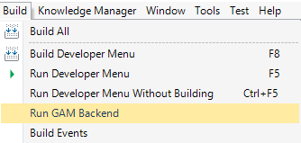
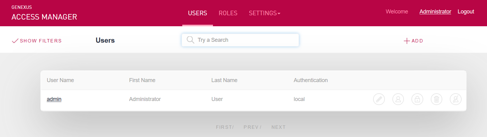

The GAM Backend is a web application that allows the GAM administrator to manage GAM Repository users, GAM Roles, GAM Security Policies, etc.
The actions that can be performed using the GAM Backend application involve the administration of:
GeneXus distributes a .zip file with the binaries that are unzipped at build time.
In the case of .NET, the file is unzipped in the web directory; in the case of Java, in a folder called GAM_Backend, which is included in the web directory and will be copied to the servlets server afterwards.
For executing the compiled GAM Backend, there is an option available on the menu: Build > Run GAM Backend.

To have the binaries working, you need to build the application, as they do not access the database. They call the APIs generated and compiled in the KB, and use the configuration files of the KB to access the GAM database.
The URL access points of the GAM backend are the following:
Apart from the compiled GAM backend, the GeneXus objects can be imported into the Knowledge Base by importing GAM_Web-Administration.xpz found in <GeneXus Installation>\Library\GAM.
These objects are useful as they are examples of use of the GAM API.
They can be changed as desired if some requirements are not met (the GAM API is available for that purpose).
Note: The GeneXus objects of the .xpz file have different names to those of the compiled binaries.
The name of the XPZ objects is gamexampleww<Entity> (for example: gamexamplewwusers). The name of the compiled objects is gam_ww<Entity> (for example: gam_wwusers).
In both cases (compiled and GAM examples), the first screen that may be displayed at runtime is the Web Panel login, to enter the administrator credentials.
By default, only administrator users are allowed to execute the GAM Backend; see Restricted access to GAM Backend for more details.

The GAM backend distributed as binaries is available since GeneXus 16 upgrade 8.
If you open the KB with that version, and the backend had already been imported, the GAMExampleWWUsers object or any other object of the backend must be set as Main Object to be generated. A change has been made in the GAMHome object which doesn't reference the example objects. That's why, if you need to continue using the GAMExample objects which are in the KB, any of them must be set to Main to be generated and built when they are changed (the others are all in the call tree).
However, when the new .xpz file is imported (which contains the examples), that object is already modified and set as Main.
For more information, see SAC 46892.
To deploy the GAM backend distributed binaries, check the Include GAM Backend property in the deployment unit Target options of the Application Deployment tool.
The following is not necessary for upgrade 9 or upper.
Before taking the solution to production, exclude the following files from the distribution:
gam_changepassword
gam_notauthorized
gam_recoverpasswordstep1
gam_recoverpasswordstep2
gam_registeruser
gam_remotelogin
gam_ssologin
gam_updateregisteruser